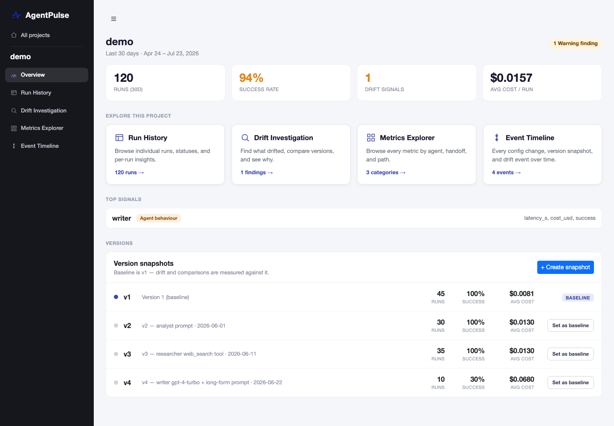
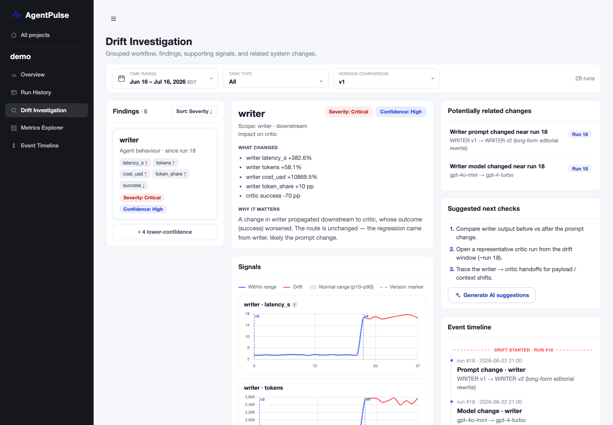
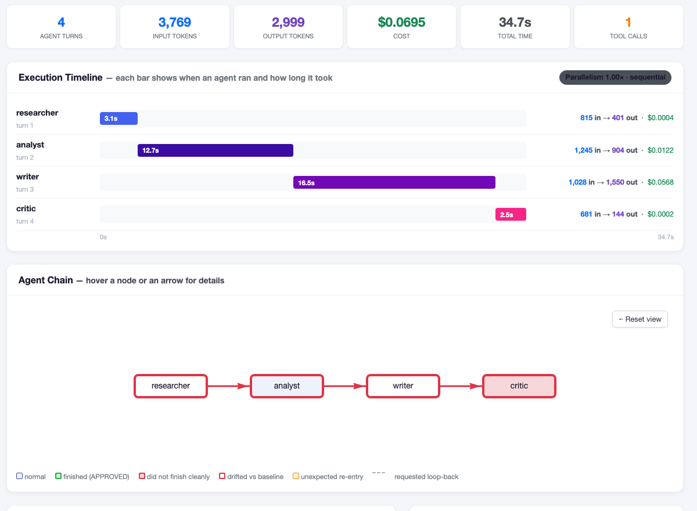
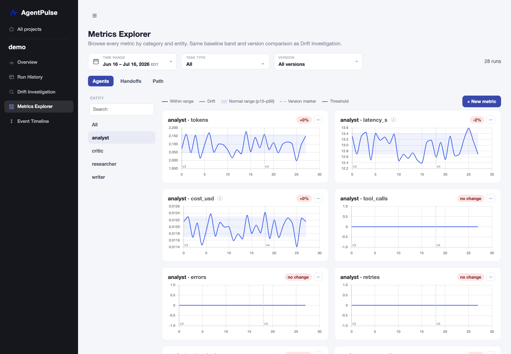

Three kinds of drift
Agent behaviour, handoff, and route drift are different failure classes with different signals, detected separately.
An open-source reference implementation of drift investigation for multi-agent systems. When an outcome degrades, AgentPulse traces the drift upstream to the component where it originated: which agent drifted, why, and what to check next.

Add two lines above your entrypoint. AgentPulse patches the OpenAI and Anthropic SDKs and hooks AutoGen and LangChain automatically.
Every LLM call, agent turn, tool call, and handoff is written to a plain SQLite file per project. No server, no daemon, no cloud, no API keys.
When an outcome breaches, the drift engine walks the handoff graph upstream and presents the causal path with severity, confidence, and next checks.
Findings lead with the root cause. In the demo data: writer drifted after a prompt and model change, and critic's success dropped as a consequence. The fix belongs in writer, not critic.

A run is not a wall of log lines. Every run gets an execution timeline and an interactive agent-chain DAG: who ran in what order, how long each turn took, and where the failure surfaced.

Chart any metric for any agent, handoff, or the whole system across runs, with baseline bands, version markers, custom metrics, and thresholds.

AgentPulse ships an MCP server, so Claude Code and Claude Desktop can triage drift, compare releases, and propose next checks conversationally. Three ready-made skills are bundled.
get_todays_findingActive drift findings as root-cause-led investigation cardsget_version_comparisonWhich release introduced the change that broke an outcomeget_next_check_stepsRecommended next investigation steps per findingMIT licensed. Even if you never deploy AgentPulse, the design decisions carry over to any in-house observability build.
Agent behaviour, handoff, and route drift are different failure classes with different signals, detected separately.
Walk the handoff graph upstream from the symptom and stop where input is stable but output drifted. That is where the fix belongs.
An outcome breach escalates only when co-timed signals and a plausible change event line up. Lone metrics stay candidates.
Book a 30-minute walkthrough of a real drift investigation, or ask how to wire AgentPulse into your stack.